第1轮普通输入试玩
第17回合完成
胜利并完成对应战后操作；1,234次按键记录。
逐一核对八张战斗地图、九处据点与两队行军区域：西队回到日返后的城镇、军需路与山村，东队仍在黑昼中的盐路和提炼院。室内石板、露天砌石、盐土、草地、船体甲板和木栈道按空间用途区分。
六张地图作环境修正；M31街区与M32军需大道经复查保持原图。战术格、部署、敌人、任务对象、道路通行与现有动画保持。变更已同步到代码、地图数据和独立桌面包。
第三章回到当前时间，西大陆城镇与军需路使用草地、土路和自然光；东部盐原继续庇护流失后的冷暗光。盐原营地在大地图的原沙地格修正为小片盐地，与战斗和安置处衔接；原节点、道路、解锁与移动数据不变。
季节仍按故事时间选择：第一章仪式前是冬景；第二章回到半年前，前段也保留冬景；第二章押送舰战后确认继续航行时，西大陆日返转暖与东群岛黑昼同时发生；第三章延续这个结果。下方“修改前”是第三章原本使用的日返后底图，不是第一章冬景回退。

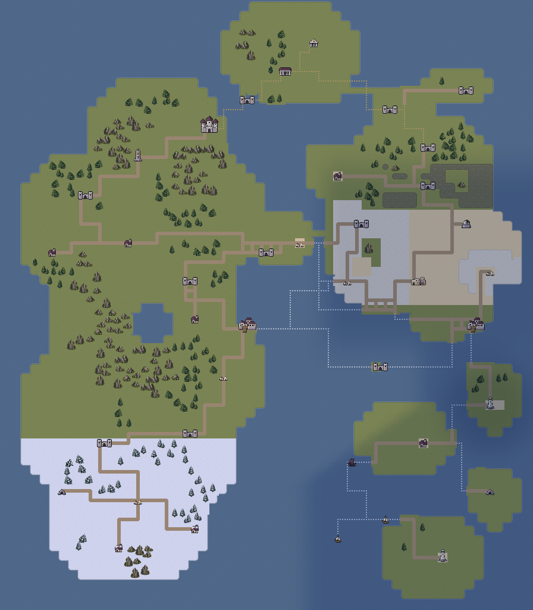
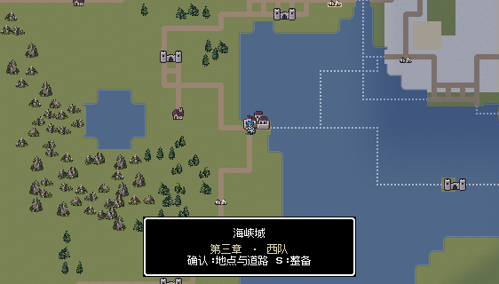
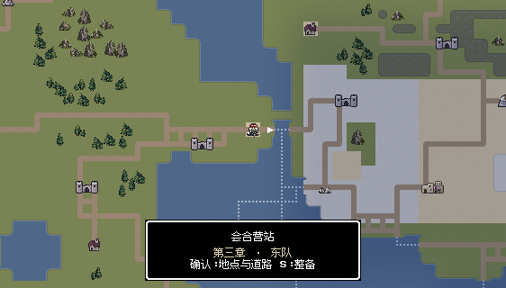
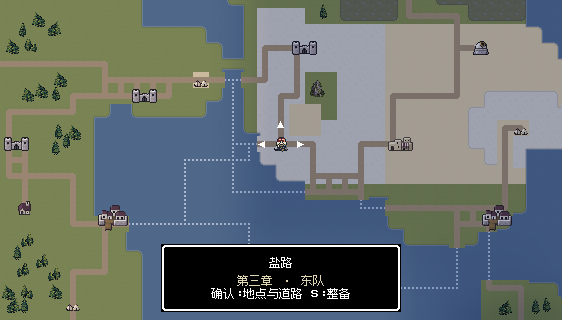
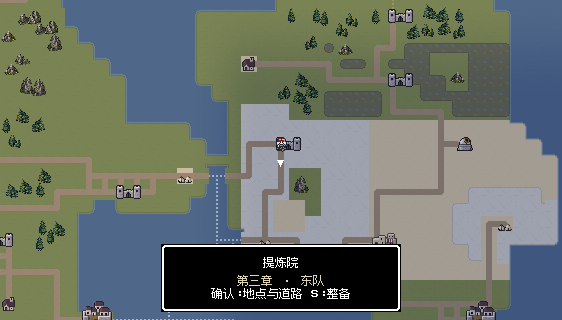
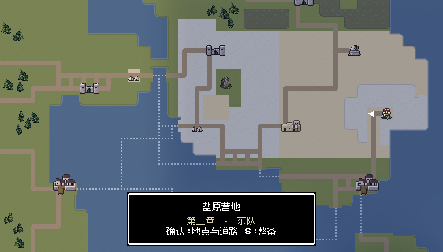


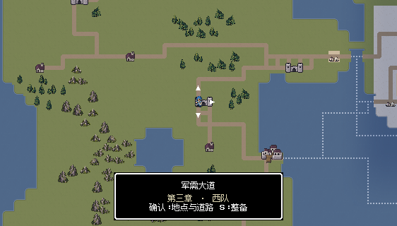


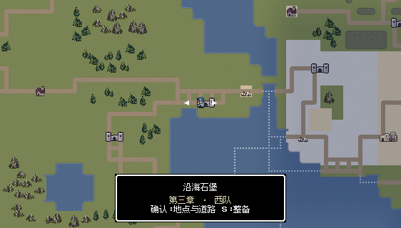


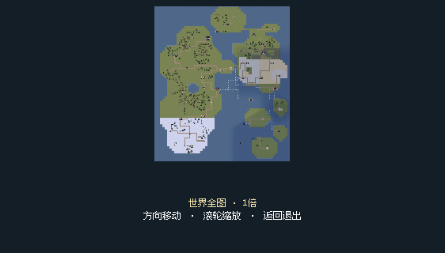
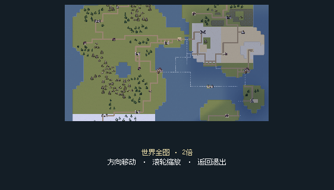


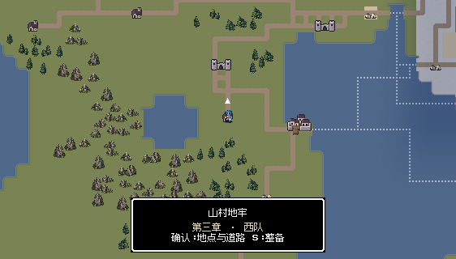


西大陆日返后的室外街区与拘押院，土路、石门前及草地成立，保持。

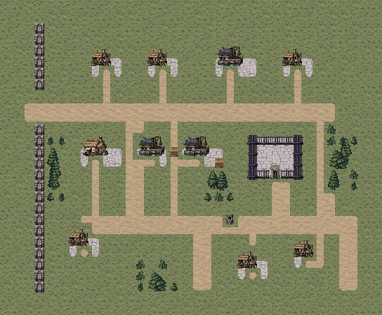
胜利并完成对应战后操作；1,234次按键记录。
胜利并完成对应战后操作；1,286次按键记录。
西线运输土道、转运石台、林坡与货车路线合理，保持。

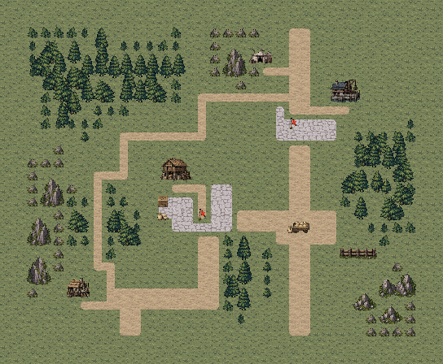
露天堡院使用风化砌石；既有树木脚下为未铺石的植土带，工房外观与海岸栈桥保持。

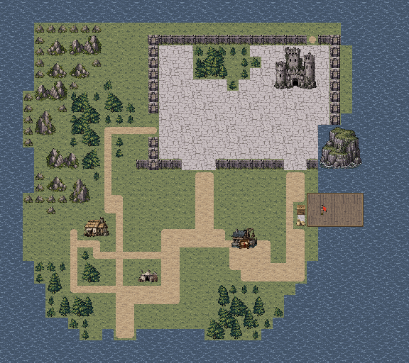
胜利并完成对应战后操作；1,005次按键记录。
胜利并完成对应战后操作；911次按键记录。
日返西岸码头保持自然光，院落石地、风化岸栈、船板区别保留；舰上房舍沿用第二章同尺寸低矮船舱。
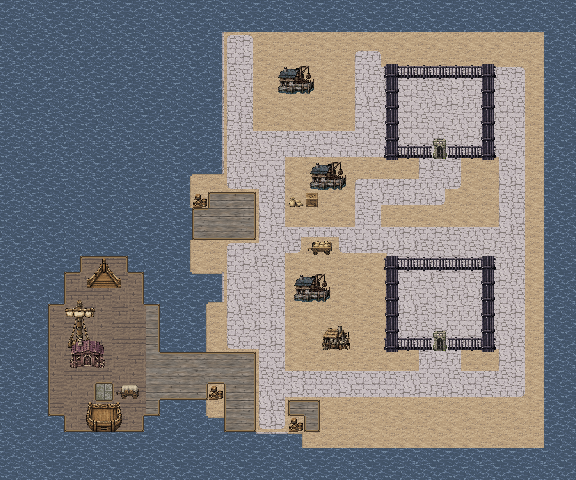
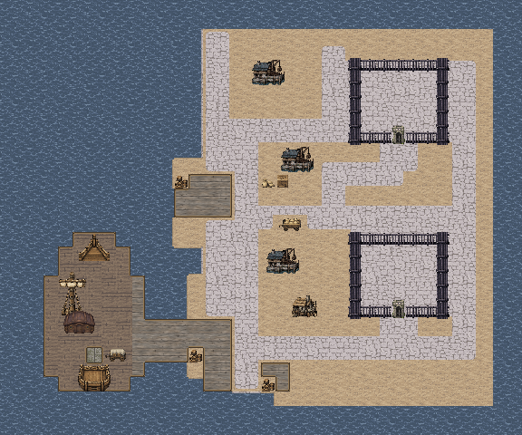
胜利并完成对应战后操作；1,223次按键记录。
胜利并完成对应战后操作；1,202次按键记录。
盐地、干土路与潮池保持；东部庇护继续流失，冷暗光衔接第二章黑昼。
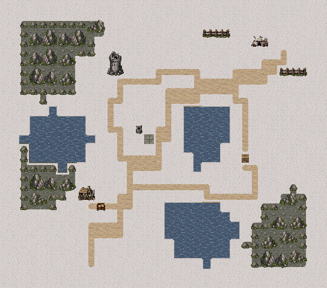
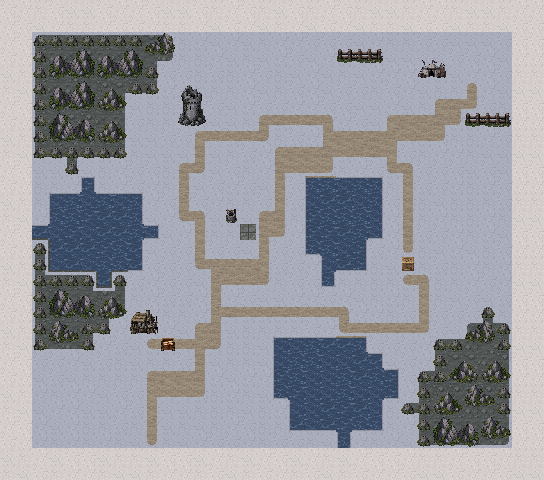
胜利并完成对应战后操作；1,377次按键记录。
胜利并完成对应战后操作；1,239次按键记录。
露天提炼后庭、石廊与检修桥保持；术士工房去顶室内用磨损石板和完整工作台，取消房间内的整栋营房屋顶，开门门槛同步室内石地；冷暗光与盐原一致。

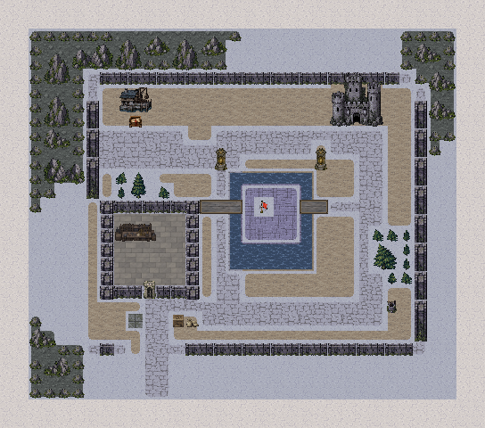
原先墙内摆放的整栋带屋顶营房会让玩家误读为空间套房。现改为同占地的工作台、储架和提炼器具；房间地面改室内磨损石板。工房门真实开启后，门槛继续使用相同室内石材。工作台沿用48×32尺寸，门、人员与通路位置保持。
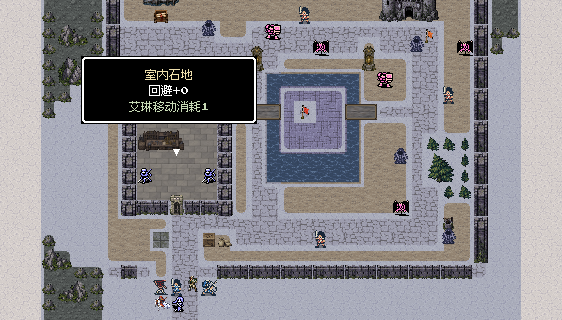
胜利并完成对应战后操作；1,117次按键记录。
胜利并完成对应战后操作；818次按键记录。
日返后山村的草地、土道与室内牢室石地保持；两栋积雪房舍改同尺寸无雪家屋。

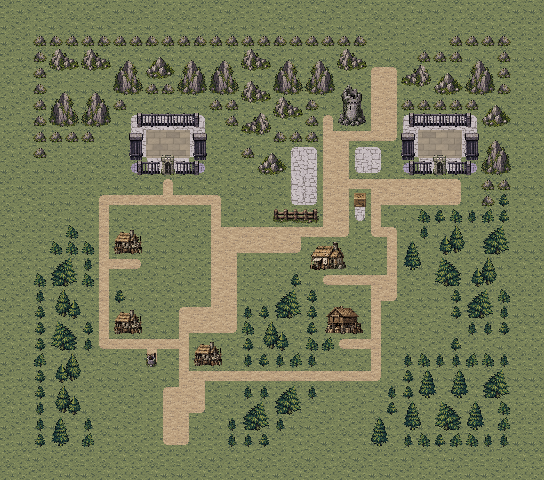
露天盐土、黄砂区与室内拘押营房石地保持；光照衔接仍处黑昼的东部盐原。

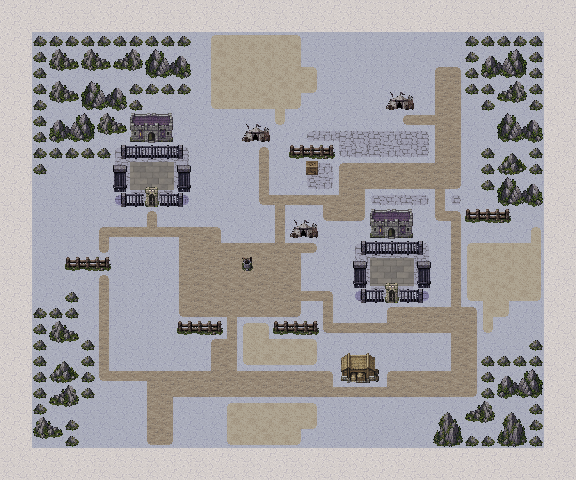
庆典与旧街用露天石庭，军需转运站用土道与仓门石台，沿海工房用岸侧仓库与接驳船，盐路和提炼院用盐地及冷暗光，山村安置处明确处在地牢之外，盐原营地使用营房外观。会合营站按世界图沙岸定位，不再出现停在陆地上的船舱。


八张地图各完成两轮最终版本通关，共16场、16,012次普通按键。每场从真实游玩记录的隔离副本，经普通整备和当前地图入口开始，包含任务交互、胜利和对应战后操作。未编辑战斗属性、随机结果或强制胜利。工房最后一项修正完成后，F33又补做两轮，表中采用最终版本记录。
| 地图 | 第一轮 | 第二轮 |
|---|---|---|
| M31 | 17回合 | 18回合 |
| M32 | 10回合 | 13回合 |
| M33 | 13回合 | 12回合 |
| F31 | 19回合 | 18回合 |
| F32 | 21回合 | 21回合 |
| F33 | 13回合 | 11回合 |
| S31 | 9回合 | 9回合 |
| S32 | 10回合 | 10回合 |
从本轮M33真实战后记录，正常调动两队进入会合营站，完成会谈、关系与传令剧情，确认第三章结束并进入第四章。此项是章节衔接检查，范围与逐关试玩分别记录。
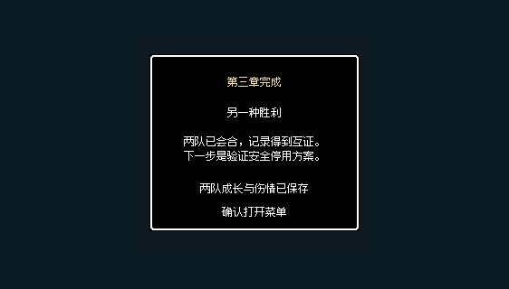
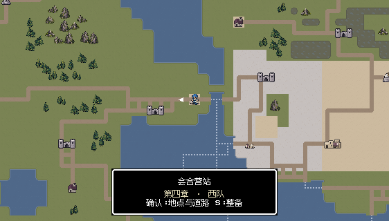
3167项规则与连通检查、523项修改范围检查、220项世界显示阶段检查、1194项据点显示范围检查、10项材质名称检查通过；19处据点可见交互通过。24张战斗、24张世界、9张据点、2张工房细节和2张章节衔接视口在后台捕获，记录的文字布局检查没有错误。
独立应用完成13,152项资源、地图、显示器与排除目录核对；包内40图的SHA-256与当前源数据逐一相同。第一、二章季节选择也在导出包中复查，避免世界底图被后续章节覆盖。
上述两轮是逐关的真实记录重开，不等于从新游戏完整通关两次。额外整章连续尝试继承了多名濒死队员，在M31剩一名敌军时达到测试驾驶的90回合上限，没有计作通关，也未为此修改伤情、敌人或难度。各关最终版本两轮均通过；章节衔接另从本轮战后记录验证。
本次没有安装手机包。HTML文件路径、图片及交互脚本检查与Godot文字布局检查已执行，未把它们表述为浏览器布局引擎实测。
工房工作台由内置imagegen生成透明PNG，按实际48×32脚印等比导出，最终2461字节。原始1536×1024源图与完整提示词保存在工程离线source目录，未打入游戏包；运行图检查透明边缘、完整轮廓和实际像素尺寸。其余地面均复用既有原生像素瓦片；大图集保留原生分辨率和瓦片索引，体积按无损质量优先处理。
完整生成提示词 · 源图与导出记录 · 运行工作台48×32
修改范围检查 · 规则检查 · 当前独立包验证 · 交付清单 · 完整流程文档1.18